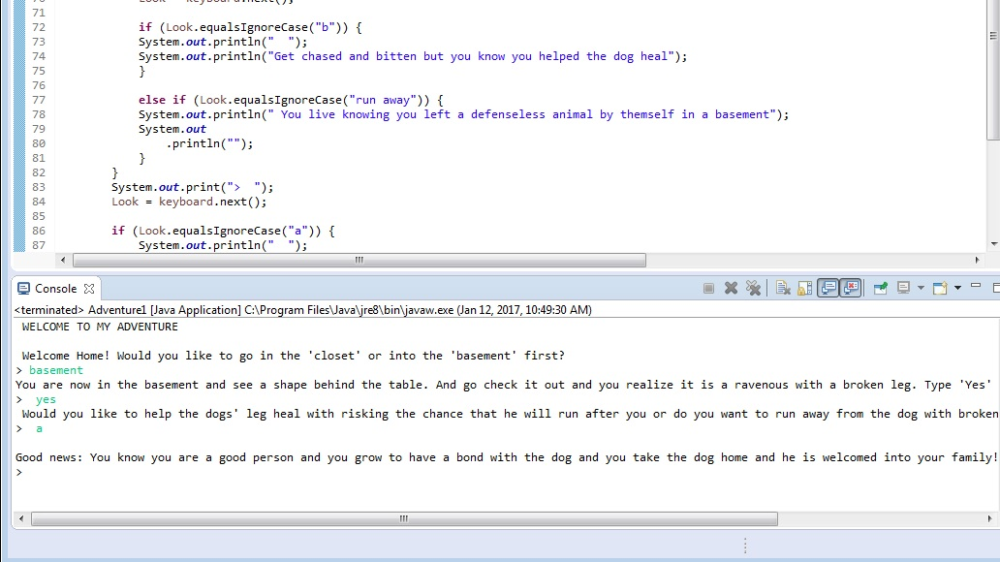

Java Content
Adventure Project
Description:
In this project we made a mini adventure based on multiple decision and in the end the decisions you have made will result in good, bad, or okay news. My project is about someone who enters a creepy house and needs to choose between going into the closet or into the basement. In the closet you go and find a girl who has a monster/ demon inside of her and you have to make the decision of helping her of fighting her in order to make it out of the closet alive. If you help her you end up with good news, however if you do not help her you end with bad news. If you choose to go into the basement you see a shape behind the table and behind the table is a dog with a vicious dog with a broken leg and you make two decisions about what to do about the dog.
Concepts Learned:
We learned how to scanner methods. These methods returns the next value that you choose. Also how to read integers and what programming is needed to allow the computer to read the integers. Then we learned to let the computer read in doubles and strings. We also learned that if an error is in the coding to have the program still know what you are trying to read.